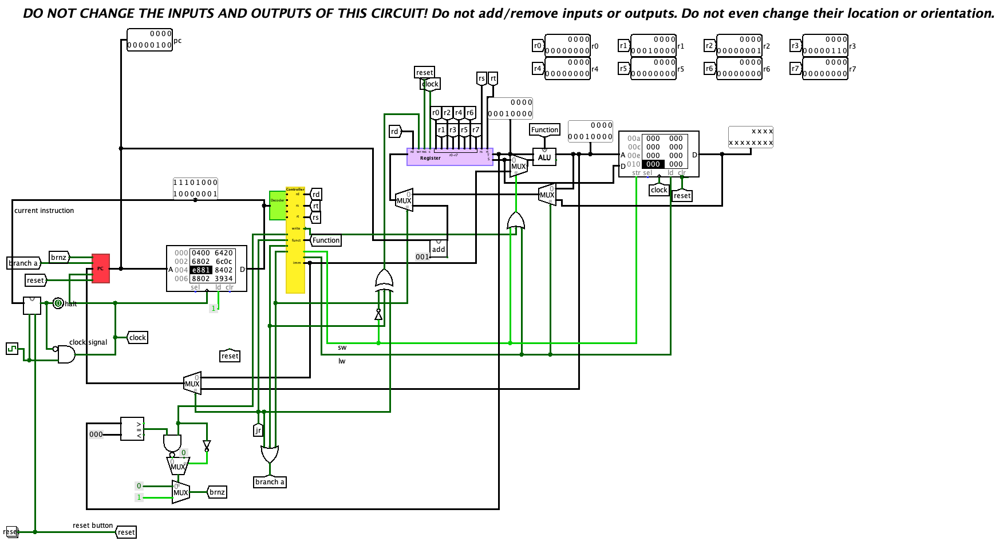

Titel: CA Project 6: Full Datapath
Dit verslag werd opgesteld door:
De oplossing bestaat uit de volgende bestanden:
Full Datapath: De aanpassingen die we hebben moeten maken om een volledig datapad te krijgen, vielen zeer goed mee. We hebben enkele gates moeten toevoegen, om ervoor te zorgen dat de juiste acties gebeuren in de PC, en dat de juiste waarden er naartoe gaan. Om de juiste instructie te laten gebeuren, kijken we naar de operation code en naar de least significante bit van de 16-bit instructie. We voegen ook de extra immediates toe voor al de nieuwe instructies. We zorgen er ook voor dat de write niet aan gaat bij bepaalde gevallen en dat de RS output overeenkomt in bepaalde gevallen met RD. We voegen een extra mux toe die ons toelaat om de PC-waarde op te tellen met 1 om die dan in een register te steken. 